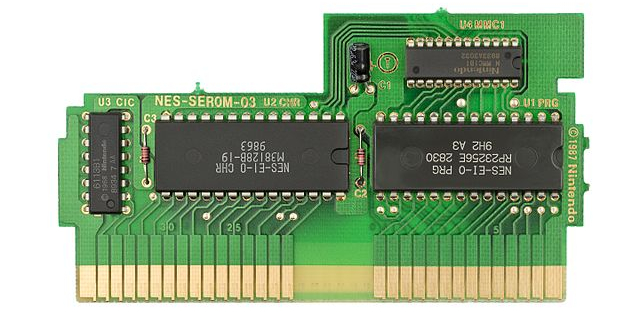

NESFab is a new programming language for creating NES games. Designed with 8-bit limitations in mind, the language is more ergonomic to use than C, while also producing faster assembly code. It's easy to get started with, and has a useful set of libraries for making your first — or hundredth — NES game.
// This small program plays a sound effect.
// Variables:
vars /sound
UU pitch = 1000
// Sends 'pitch' variable to the APU, emitting sound:
fn play_sound()
{$4015}(%100)
{$4008}($FF)
{$400A}(pitch.a)
{$400B}(pitch.b & %111)
mode main()
{PPUCTRL}(%10000000)
while true
pitch *= 1.01
play_sound()
nmi
NESFab generates better 6502 machine code than any high-level compiler tested, including GCC and LLVM. It's possible that NESFab is the best performing 6502 compiler in existence.
(Click the image to open in a new tab.)Traditionally, NES games were written by hand in assembly language, as anything else at the time was too sluggish to run on the 1980's era CPU. NESFab isn't sluggish though!
The NES uses a 16-bit address space, but most games need more data than 16-bits can represent. To overcome this limitation, programs can be broken up into segments called "banks", and hardware on the cartridge can switch between these banks at runtime.
Handling banks is normally a tedious affair for programmers, but NESFab handles it for you. The compiler smartly allocates code and data into banks, with the gritty details abstracted away.
Writing a half-dozen conversion scripts isn't fun. Luckily, NESFab automates asset loading and conversion for you. Just plop your assets into your project directory, import a library, and you're rolling!
The best way to get NESFab is by compiling it from the source, which will always be up-to-date. For those who don't like compiling, binary releases will be provided from time to time.
Please understand that NESFab is currently in beta, and likely has bugs and missing features.
The following is a list of NESFab tutorials:
If you have produced a tutorial, reach out to have it listed here.